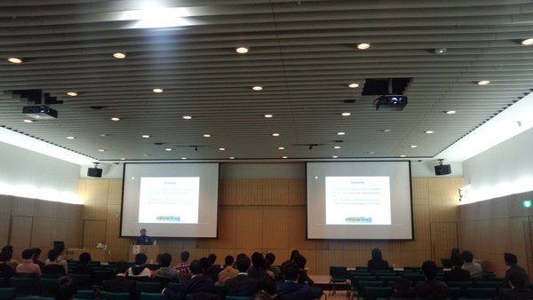

多くの選手、スポンサー、参加者ならびにスタッフ・関係者により、 SamurAI Coding 2015-16 World Final Roundは無事終了しました。 グループリーグの対戦の結果、 18チーム中次の6チームが最終の決勝に進出しました: piyo, sinryakudegeso, Tuure, kwrig, arukuka & mztmr_nggts, siman。 さらに決勝リーグの対戦の結果、 チーム piyo が優勝しました。 また、賞金およびスポンサー賞は下記のチームに授与されました。 おめでとうございます！ さらに懇親会にてネットワーキングを実施しました。 ありがとうございました、そして、また次の機会にお会いしましょう！
| Place | Team name | Points |
|---|---|---|
| 1 | piyo | 25394 |
| 2 | sinryakudegeso | 24861 |
| 3 | Tuure | 23757 |
| 4 | kwrig | 20609 |
| 5 | arukuka & mztmr_nggts | 19563 |
| 6 | siman | 18749 |
7th Place (Finalists): omu, yamatchan, Emily, kni2621 (Group A), iwashi31, nhho, nocorupe, KuasAI104 (Group B), Taiyo, suikkee, y_kawano, takapt (Group C)
当日の会場中継ビデオをニコニコ生放送よりご覧いただけます: http://live.nicovideo.jp/watch/lv253878684
